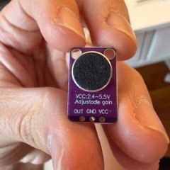
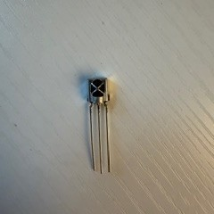
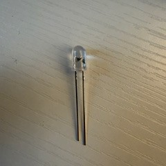
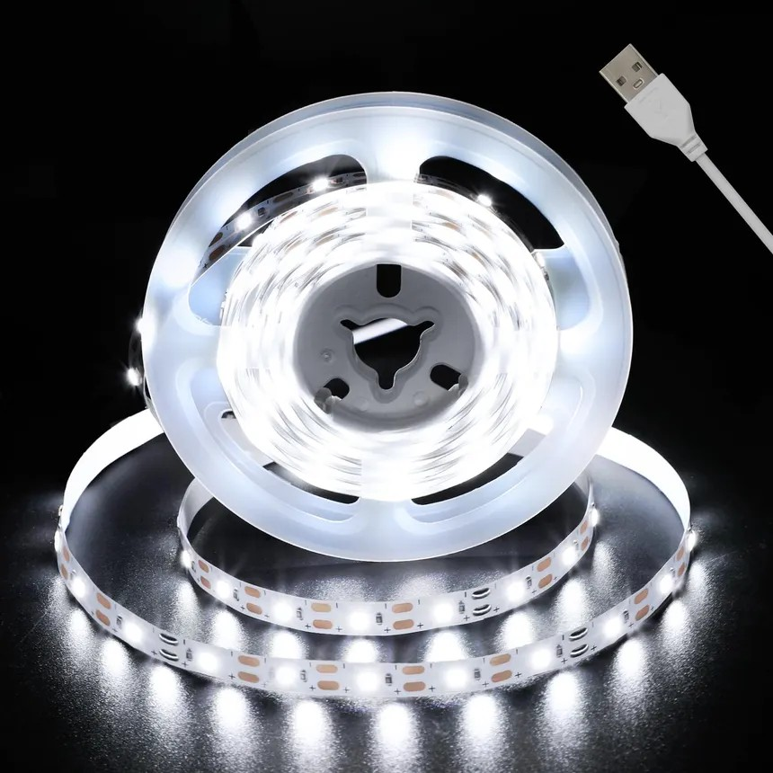
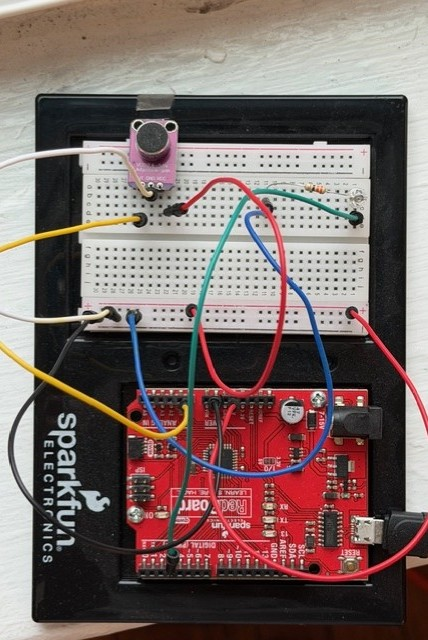

All projects
Project 06/ 08
Whistle Controlled Decorations
Turn off my lights from bed by whistling, with no remote and no controller.

Objective
My lamps are not near my bed, so I have to get up to turn them off before sleeping. I wanted to switch them off without getting up and without a remote or other controller. I'm good at whistling, so the idea was to control the lights by whistling.
Components




I pointed the light strip's remote at the receiver circuit and recorded the hex values for power and several colors. Then I built the transmitter circuit, with match frequencies spaced 300 Hz apart, to send those commands.

Next steps
- Add a capacitor to smooth the input signal and avoid accidental triggering.
- Adjust the code so inputs are more distinct, which allows more commands.